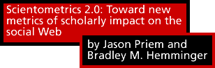

Email this article
Email this article 
The growing flood of scholarly literature is exposing the weaknesses of current, citation–based methods of evaluating and filtering articles. A novel and promising approach is to examine the use and citation of articles in a new forum: Web 2.0 services like social bookmarking and microblogging. Metrics based on this data could build a “Scientometics 2.0,” supporting richer and more timely pictures of articles’ impact. This paper develops the most comprehensive list of these services to date, assessing the potential value and availability of data from each. We also suggest the next steps toward building and validating metrics drawn from the social Web.Contents
1. Introduction
2. Scientometrics: The state of the art
3. Science and Web 2.0
4. Sources for scientometrics 2.0
5. Conclusions
One of the key problems facing scholarship today is the growth in the size of its literature (Rowlands and Nicholas, 2005). Scientists read 50 percent more papers than they did in the 1970s, spending less time on average with each one (Renear and Palmer, 2009). “Article overload” hits evaluators like tenure and promotion (T&P) committees as well; often there is simply too much work being published, in fields too specialized, for evaluators to fairly examine a scientist’s work (Monastersky, 2005). Evaluators often rely on numerically–based shortcuts drawn from the closely related fields (Hood and Wilson, 2001) of bibliometrics and scientometrics — in particular, Thompson Scientific’s Journal Impact Factor (JIF). However, despite the popularity of this measure, it is slow (Brody and Harnad, 2005); narrow (Anderson, 2009); secretive and irreproducible (Rosner, et al., 2007); open to gaming (Falagas and Alexiou, 2008); and based on journals, not the articles they contain.
Today, citations are no longer the only source of impact metrics. The Web can be mined for impact indicators, just as the JIF mines the citations recorded in the Journal Citation Report (Thelwall, 2008). Under the banner of “webometrics,” researchers have examined links to scholarly articles from sources like personal Web pages (Vaughan and Shaw, 2005) and online syllabi (Kousha and Thelwall, 2008). Others have exploited the migration of articles from paper–based to electronic representations to build metrics of influence based on articles’ downloads (Kurtz, et al., 2005; Bollen, et al., 2009). Both approaches take advantage of the pervasiveness and importance of new tools (Web pages, search engines, e–journals) to inform broader, faster, and more open metrics of impact.
Just as the early growth of Web–supported webometrics and usage–based metrics, the current emergence of “Web 2.0” presents a new window through which to view the impact of scholarship. These days, scholars who would not cite an article or add it to their Web pages may bookmark, tweet, or blog it. Arguably, these and related activities reflect impact and influence in ways that have until now eluded measurement. Many Web 2.0 tools offer real–time access to structured data via application programming interfaces (APIs) and capture diverse types of usage and diverse audiences. These qualities give Web 2.0–based metrics unique value for the construction of real–time filters to help tame article overload. In addition, this approach empowers evaluators and evaluated alike with broader, more finely textured, and more up–to–date pictures of articles’ impact. Using data from Web 2.0 tools, researchers could investigate models that distill multiple metrics, or build visualizations of activity across tools; ultimately, the study of these data can build a rich “scientometrics 2.0.”
While several writers have recognized the potential of scientometrics 2.0, none have set out a comprehensive and detailed list of sources aimed at informing future empirical work. This article attempts to provide such a list. After a brief literature review, we present seven categories of Web 2.0 tools that might be productively mined: bookmarking, reference managers, recommendation services, comments on articles, microblogging, Wikipedia, and blogging. In each category, we sample research in that area, list specific tools, and assess the availability of data. In concluding the article, we offer a map for future work, including the mining, aggregation, and description of data from Web 2.0 tools.
2. Scientometrics: The state of the art
2.1. Citation counting and the JIF
Created by Garfield (1972), the Journal Impact Factor (JIF) is a measure of a journal’s average citations per article. Though originally conceived as a way to assess journals, it is now often used to establish the value of the articles published in those journals, and by extension the quality of individual scientists’ work (Fuyuno and Cyranoski, 2006). It is becoming increasingly apparent, however, that the JIF has serious shortcomings when used for any of these purposes. Perhaps the most important weakness is that the JIF examines journals, not articles; Seglen [1] noted “[t]he citedness of journal articles … does not seem to be detectably influenced by the status of the journal in which they are published.” The JIF is a proprietary measure whose results have defied duplication (Rossner, et al., 2007; Rossner, et al., 2008); moreover, results can be — and are — easily gamed (Falagas and Alexiou, 2008). As many have shown (see MacRoberts and MacRoberts, 2009, for review), much scientific impact goes uncited; the JIF ignores this. Most importantly, perhaps, the timeliness of the JIF is limited by the long time it takes for an article to accumulate citations. Alternative citation–based metrics like the Eigenfactor (Bergstrom, 2007) and H–index (Hirsch, 2005) correct many of the JIF’s flaws, but still suffer from this delay.
2.2. Metrics on Web 1.0: Webometrics and usage–based metrics
Researchers interested in scholarly communication were quick to recognize that the Web, as a “nutrient–rich resource space for scholars” [2], offered new opportunities to examine and measure scholarly impact. The Web would open up our ability to measure researchers’ “scientific ‘street cred’” [3] and develop “… an embryology of learned inquiry.” [4] Data from the Web would “… give substance to modes of influence which have historically been backgrounded in narratives of science.” [5] Pursuit of these goals has followed two main strands: the analysis of Web citations and of article usage data.
Scholars in the field of webometrics have undertaken Web citation analysis, “using the Web to count how often journal articles are cited.” [6] For instance, Vaughan and Shaw (2005; 2008) look at the relationship between Web mentions of articles’ titles and traditional text citations, finding significant correlation. Kousha and Thelwall (2007) also uncover moderate correlation in seven distinct disciplines between Web/URL citations (mentions of either an article’s title or URL) and text citations as recorded by the Institute for Scientific Information, whose numbers inform the JIF. More focused work has specifically investigated Web citations from syllabi to articles, suggesting that this could measure an article’s impact on teaching (Kousha and Thelwall, 2008).
A related approach is the analysis of server download data for articles. The migration of academic literature to the Web allows us to examine views or downloads for most articles; instead of measuring an article’s impact on authors (who may or may not cite it), usage data supports measurement of impact on readers. Marek and Valauskas (2002) examined the logs of the journal First Monday to identify classic papers that were repeatedly downloaded between 1999 and 2001 as an alternative to citation analysis. Reporting on the work of the MESUR project, a comprehensive examination of over 300 million user interaction events across a wide range of disciplines and publishers, Bollen, et al. (2009) argue persuasively for the robustness and broad usefulness of metrics based on this usage data. Several investigations have found articles’ early downloads to correlate well with later citation, including Brody, et al. (2006), Watson (2009), Perneger (2004), and a Nature Neuroscience editorial (Anonymous, 2008).
Despite these valuable and encouraging results, however, both these approaches are constrained by the weakness of the of Web 1.0 paradigm. Web citation analysis relies on search engines for data, which may or may not have usable APIs (Google doesn’t). They return unstructured HTML, requiring laborious hand processing to “… extract meaning from the chaos” (Thelwall, 2003). Likewise, usage data may be difficult to obtain from publishers; moreover, the data are difficult to interpret, given the ease of generating artificial downloads and the problem of downloads that are never read. Both these approaches are valuable, and continue to present exciting possibilities for both research and the creation of practical metrics. However, their shortcomings also suggest the need for more structured, distributed, and easily accessed data sources.
3.1. Science and the social Web
Though the term “Web 2.0” has been derided as a marketing invention, it does to some extent express a new, cohesive idea (Cormode and Krishnamurthy, 2008). There are many ways of defining Web 2.0, (O’Reilly, 2005), but perhaps its most important feature is participation (Ding, et al., 2009), with applications like Twitter, Digg, and Delicious as its archetypes; the term “social Web” has become more or less as a synonym. Given the social and communicative nature of science, it is little surprise that many scientists have become active participants in this new Web, often using services and tools created specifically for scholarship. Table 1 lists a sample of such tools (note that that this is only to give a rough idea; many more services exist, and categories could easily be subdivided or swapped in many instances).
Table 1: A partial list of popular Web 2.0 tools, and similar tools aimed at scholars. Description General–use application Scholarship–specific application Social bookmarking Delicious
(http://delicious.com/)CiteULike
(http://www.citeulike.org/,
Connotea
(http://www.connotea.org/)Social collection management iTunes
(http://www.apple.com/itunes/)Mendeley
(http://www.mendeley.com/,
Zotero
(http://www.zotero.org/)
[reference managers]Social news/recommendations Digg
(http://digg.com/),
(http://www.reddit.com/),
FriendFeed
(http://friendfeed.com/)Faculty of 1000
(http://facultyof1000.com/),
[similar, but curated]Publisher–hosted comment spaces (e.g., blog comments) Most Web 2.0 applications British Medical Journal
(http://www.bmj.com/),
PloS
(http://www.plos.org/),
BioMed Central
(http://www.biomedcentral.com/),
Bioinformatics (Oxford University Press journal)
(http://bioinformatics.oxfordjournals.org/)Microblogging
(http://twitter.com/)User–edited reference Wikipedia
(http://www.wikipedia.org/)Encyclopedia of Life
(http://www.eol.org/),
Scholarpedia
(http://www.scholarpedia.org/),
Citizendium
(http://en.citizendium.org/)Blogs Wordpress.com
(http://wordpress.com/),
Blogger
(https://www.blogger.com)Research Blogging
(http://researchblogging.org/),
Blogger
(https://www.blogger.com)Social networks
(http://www.facebook.com/),
MySpace
(http://www.myspace.com/),
Orkut
(http://www.orkut.com/)Nature Networks
(http://network.nature.com/),
VIVOweb
(http://vivoweb.com/);Data repositories DBPedia
(http://dbpedia.org/About)GenBank
(http://www.ncbi.nlm.nih.gov/genbank/)Social video YouTube
(http://www.youtube.com/),
Vimeo
(http://www.vimeo.com/)SciVee
(http://www.scivee.tv/)
Some have lamented that scholars’ participation in Web 2.0 is surprisingly low, perhaps because the incentive structure of science fails to reward this sort communication (Nielsen, 2009). Even so, scientists’ participation in Web 2.0 is not insignificant, and is likely to continue to increase. Many of the scholarly tools listed above are reporting dramatic growth (described in more detail below), and it seems likely that this growth will continue as a “born–digital” generation moves into tenured positions.
3.2. Calls for metrics based on Web 2.0 tools
A growing number of commentators are calling for measures of scholarly impact drawn from Web 2.0 data. In a relatively early piece, Jensen (2007) argued that a variety of Web measures will need to be compiled to establish scholarly “Authority 3.0.” Taraborelli (2008) noted that social media, especially social bookmarking, creating a “soft peer review” to supplement traditional, labor–intensive review practices. He predicted that “popularity indicators from online reference managers will eventually become a factor as crucial as citation analysis for evaluating scientific content.” [7] Patterson (2009) presented the efforts of the online publisher PloS to aggregate and display article–level metrics from a variety of sources including downloads, citations, social bookmarks, blog comments, article comments, and “star” ratings. Neylon and Wu (2009) argued for using social Web metrics to power article filters to deal with information overload. They decried the slowness of citation measures, and proposed measuring citation counts, download statistics, comments, bookmarking, and expert ratings. Quoted in Cheverie, et al. (2009), Norman proclaimed the arrival of digital scholarship and, with it, broader Web–based evaluation of impact. He encouraged the creation of metrics using data from “downloads and link indexes, reviews, publication awards, scholastic bookmarking, and tagging (e.g., the ‘Slashdot index’), or … academic networks like LinkedIn,” [8] and suggested that these metrics could well be automated. Unsurprisingly, this has been a topic of interest to academic bloggers, as well. Anderson (2009) observed that “citation is occurring in new ways, and scientific thinking is not always propagated via the published scientific article.” He proposed the measurement of articles’ impact using Twitter, blogs, video, and Wikipedia.
Table 2: Calls for Web 2.0 metrics of scholarship. Source Suggested Web 2.0 sources for metrics Main use M. Jensen (2007) Tags, “discussions in blogspace, comments in posts, reclarification, and continued discussion.” Establishing scholars’ authority Taraborelli (2008) Social bookmarking: CiteULike, Connotea Augmenting or replacing peer review Anderson (2009) Twitter, blogs, video and “Wikipedia, or any of the special ‘–pedias’ out there” Broadening the scope of the JIF Neylon and Wu (2009) Zotero, Mendeley, CiteULike, Connotea, Faculty of 1000, article comments Filtering articles Norman in Cheverie, et al. (2009) “scholastic bookmarking, and tagging (e.g., the ‘Slashdot index’) … academic networks like LinkedIn” Tenure and promotion Patterson (2009) “… social bookmarks; blog coverage; and the Comments, Notes and ‘Star’ ratings that have been made on the article.” “[A]ssessing research articles on their own merits …”
3.3. Gaming social metrics
Wherever there are metrics, there will be attempts to game them. Because it is so easy to participate in social media, the gaming of metrics based on these tools is of particular concern. What is to keep an eager author from giving her own article hundreds of Diggs or Wikipedia citations? What will keep publishers from contracting with companies like “Subvert and Profit,” (http://subvertandprofit.com), which sell votes from registered users of Digg, Facebook, and others from 40 cents to a dollar a piece? These “pay–to–say” (Blackshaw, 2006) campaigns yield artificially–generated grassroots enthusiasm, or “astroturf” (Klotz, 2007), and they are a significant concern for academic metrics based on social media. A complete answer to the problem of social media spam is well beyond the scope of this paper. It is important to note, however, that the concern is not new, that there are established solutions, and that research in this area remains active.
History suggests that while gaming social metrics may not be solved, it can be controlled. For example, advertisers have assaulted Google search results with “black–hat SEO” (Ntoulas, et al., 2006) and “Google bombing” (Tatum, 2005), and have attacked e–mail with automatically generated spam; legitimate users and administrators have successfully responded to both with statistical filters of increasing subtlety and complexity. Similar statistical techniques can help control social media gaming. For instance, Digg uses statistical techniques and a vigilant community to spot users abusing the system, often with great success; “Spike the Vote,” a service claiming to be a “bulletproof” way to game Digg ended up sold on eBay for less than US$1500 (Arrington, 2007). The automated WikiScanner tool (http://wikiscanner.virgil.gr) exposed and helped correct corporate tampering with Wikipedia articles (Borland, 2007).
Research is continuing in ways to apply and improve validation techniques for social media; for instance Yardi, et al. (2010) find “structural network differences between spam accounts and legitimate users.” [9] One particular virtue of an approach examining multiple social media ecosystems is that data from different sources could be cross-calibrated, exposing suspicious patterns invisible in single source. While additional work in this area is certainly needed, there is evidence to suggest that social metrics, properly and cautiously interpreted, could be relatively robust despite attempts to game them.
4. Sources for scientometrics 2.0
While these broad calls to action demonstrate a growing scholarly interest in Web 2.0 metrics, none of them have included a practical list of data sources aimed at directly supporting research. Such a list would include the technical possibilities of each system, evidence of its use among scholars, and its face validity as a measure of impact. We give this list in sections 4.1 through 4.7 below. Each of these seven sections examines a single category of scholarly applications from Table 1: bookmarking, reference management, recommendation, comments on articles, microblogging, Wikipedia, and blogging. An eighth section (4.8) more briefly discusses the potential of social networks, open data repositories, and social video. While a single–article format requires a somewhat preliminary treatment, this can nonetheless serve as a useful jumping–off point for future work.
4.1. Bookmarking
Social bookmarking may be the best–developed scholarly Web 2.0 application. Connotea, one of the two main services in this space, launched in 2004, “[u]nashamedly inspired by del.icio.us” (Lund, et al., 2005). The other service, CiteULike, was also launched in 2004 (Hammond, et al., 2005). Today, about 1/6 of new MEDLINE articles are bookmarked in CiteULike (Good, et al., 2009). According to Kevin Emamy of CiteULike, the database includes over two million posts (compared to around 650,000 for Connotea) (Fenner, 2009). Impact extends beyond registered users; Emamy claims that five people browse the site for every one registered member (Fenner, 2009). The general–audience service Delicious (http://delicious.com) may also be used for scholarship (Hammond, et al., 2005); Ding, et al., (2009) found that “[s]cientific domains, such as bioinformatics, biology, and ecology are also among the most frequently occurring tags” [10], suggesting at least some scholarly use.
Much research into social bookmarking has examined tags and tagging. Ding, et al. (2009) explored tags and change in Delicious as well as Flickr and YouTube; they found tags showed changing interests from year to year, and between services. It might well be productive to track scholars’ interests the same way; CiteULike already does this with its “Citegeist” service. Other research has examined the value of tags as annotations; Good, et al. (2009) compare tags to MeSH headings, finding that coverage is much sparser, but that in some instances tags provided a richer description of articles. Beltrão (2006) created a mock journal filled entirely with articles tagged “evolution” on Connotea; although 50 percent of articles came from lower–impact, “specialized journals,” the imaginary journal had more citations per paper than Nature or Science. Other work has investigated collaborative filtering algorithms to make recommendations based on shared CiteULike bookmarks (Bogers and van den Bosch, 2008). All this work suggests that the act of social bookmarking carries some significance that most likely reflects scholarly impact in some way. Social bookmarking datasets are highly accessible; Connotea has an API (http://www.connotea.org/wiki/WebAPI) and CiteULike offers database dumps for researchers (http://www.citeulike.org/faq/data.adp).
4.2. Reference managers
Although many scholars still use text files to store references (Marshall, 2008), reference managers like EndNote and RefWorks are becoming common. While many such tools are strictly Web 1.0, others are “defrosting” (Hull, et al., 2008) their frozen contents by unwrapping social features like public collections. Mendeley (Henning and Reichelt, 2008) is an excellent example; they provide a free client that indexes and organizes a user’s collection of PDF articles. At the same time, the software collects data on the user’s library that can be used to recommend new articles and potential collaborators. Mendeley has experienced incredible growth over the last year; they claim a database of 100,000 users and eight million research papers, and at current claimed growth (doubling every 10 weeks), they will own a database larger than Thomson Reuters’ Web of Science in 2010 (O’Hear, 2009). A similar tool is Zotero, a plug–in for the Firefox browser. Earlier versions without sharing features have been favorably reviewed (Lucas, 2008), but there is little scholarly investigation of the current, more social version. However, the value of both Zotero and Mendeley for metrics of impact seems clear, given the significance oof a scholar’s decision to include a resource in her personal library. According to the Zotero forum an API is forthcoming (Stillman, 2009), and the Mendeley forum likewise announced an API in construction (Reichelt, n.d.).
4.3. Recommendation systems
Recommendation systems can be somewhat artificially split into two sub–areas: general Web site recommendation tools, and domain–specific academic ones.
The prototypical service in the general Web site recommendation space is Slashdot (http://slashdot.org); founded in 1997 (Gómez, et al., 2008), Slashdot is notable for applying a Web 2.0–style model very early. Reddit (http://www.reddit.com) and Digg (http://digg.com) are newer entries. Digg in particular has enjoyed success, its “Digg this!” button becoming part of the landscape of the Web. StumbleUpon (http://www.stumbleupon.com) works similarly, allowing uses to share recommendations for Web sites; however, it tailors recommendations for individual users.
A related application is the “social aggregation service” (Gupta, et al., 2009), FriendFeed (http://friendfeed.com). This tool aggregates users’ postings from a variety of social media, supporting discussions around each. Although aggregated items like Twitter posts are better mined at their sources, the number and type of comments for each posting might be examined, as well as items posted with FriendFeed’s browser bookmarklet. FriendFeed might be especially interesting to investigate, as our experience indicates it supports a particularly active community of scientists.
Among services that recommend Web sites, Slashdot has attracted the lion’s share of scholarly investigation, likely because of its longevity. In an early effort, Baoill (2000) applied Habermas’ model of idealized public debate; later, Gómez, et al., (2008) applied social network analysis to Slashdot threads and users, finding similarities to previously studied networks. Looking at Digg, Lerman and Galstyan (2008) demonstrated that early “Diggs” predict later importance of news stories, encouraging inquiry into similar predictive validity for scholarly publications. However, while Norman suggests using a “Slashdot index” to measure scholarly impact (Cheverie, et al., 2009), we know of no research specifically aimed at tracking scholarly articles’ mentions on recommendation sites like these. Neither StumbleUpon nor Slashdot list public APIs; however, FriendFeed (http://friendfeed.com/api), Digg (http://digg.com/api), and Reddit (http://code.reddit.com/wiki/API) all do, greatly facilitating future research using these services.
The primary example of a domain–specific academic recommendation system is Faculty of 1000, a service designed for researchers in medicine and the life sciences (http://facultyof1000.com). Faculty of 1000 relies upon a “Faculty” of hand–selected reviewers to recommend articles of interest from any journal. Though similar services have been suggested and tested (Walter, et al., 2003), Faculty of 1000 (F1000) seems to have no serious commercial competitors. In many ways F1000 represents a Web 1.0 way of recommendation, as there is a strict demarcation between creators of content (the faculty) and its consumers. However, we include F1000 here because its faculty members are still peers of users, it relates well to other metrics, and it remains a novel and relatively unstudied approach to evaluating impact. Wets, et al. (2003) argue that F1000 is valuable because it assesses impact at the article level, and adds a human–level assessment that numerical measures lack — without devolving into a noisy “free–for–all” that results from unrestricted commenting.
While this sounds good, one could argue that citation measures are just as “human” as recommendations, and that the “F1000 Factor” the site publishes next to each review is just as numerical as the JIF. Indeed, a Nature Neuroscience editorial (Anonymous, 2005) suggested that F1000 added little value, pointing to a very strong correlation (r = 0.93) between F1000 score and JIF. This said, the service has clearly demonstrated some value, as over two–thirds of the world’s top research institutions pay the annual subscription fee to use F1000 (Wets, et al., 2003). The F1000 Web site claims that over one–third of F1000 “exceptional” papers aren’t from Cell, Nature, or Science (CNS), and a quarter of CNS papers aren’t recommended at all (Faculty of 1000 Biology, 2010). The work of Allen, et al. (2009) supported this; they found in a three–year study that F1000 spotted some valuable articles that “sole reliance on bibliometric indicators would have led us to miss … .” [11] It is easy to see the value, too, in the greater speed of F1000 compared to the JIF. Incorporating F1000 ratings or similar measures would bolster the breadth and richness of a scientometrics 2.0 approach. One downside, though, is that F1000 has no listed plans for an API, making the company’s cooperation a requirement of any such investigation.
4.4. Comments on articles
Commenting on blog posts, Web articles, and other online media has become commonplace. This is not so in the realm of online scholarly publishing, where most journals’ Web sites remain strictly one–way. However, a small group of journals allows readers to comment on articles; examples include the British Medical Journal, BioMed Central, Public Library of Science (PloS) journals, and several Oxford journals including Bioinformatics. Comments may serve a variety of functions in practice, including criticism, requests for clarification, messages from the author, and supplemental materials (Adie, 2009). Despite the promise of article commenting, is has been pronounced a failure by some (Nielsen, 2009; Neylon and Wu, 2009) for not attracting participation. Indeed, Nature tried commenting and closed it down, noting that neither authors nor commenters displayed much interest in the system (Greaves, et al., 2006).
Explanations for the lack of interest in commenting can be grouped into three “C’s”: culture, credit, and critical mass. First, the culture of academia is tightly proscribed and highly traditional. Many academics are happy to do things the way they’ve always done them, and institutions are not set up to reward abrupt departures from established norms (Harley, et al., 2010). A second reason relates to credit. Academics must satisfy tenure and promotion committees with their work, and to date these groups have not given much credit to online commenting (Cheverie, et al., 2009). Finally, there is the problem of critical mass: participants are less interested in commenting unless many people already comment — a classic chicken–and–egg problem (Lowe, 1986).
Despite the grim pronouncements of some observers, it may be that reports of the failure of commenting have been, to paraphrase Mark Twain, greatly exaggerated. Adie (2009) reported that nearly a fifth of PloS ONE (http://www.plosone.org/) articles have comments, most of which are substantive. The well–known 90–9–1 rule (“The 90–9–1 principle”, 2010) states that the vast majority of users never create content, even in healthy Web communities; we may be expecting too much. We also must keep in mind that institutional change takes many years; gradual acceptance is not failure.
The extent to which article comments reflect impact remains an open question. Although a number of bloggers have examined comments on PLoS articles, including Adie (2009) and Jensen (2010), we have uncovered no peer–reviewed work in this area. An impediment to such efforts is that comment data is not generally available via API, and so must be scraped. PLoS is an exception, offering comment counts as part of a more comprehensive downloadable dataset (http://www.plosone.org/static/almInfo.action).
4.5. Microblogging
Twitter, the best known microblogging application, has achieved rapid and well–publicized growth. Though it began as a way for users to answer the question, “What are you doing?”, its ease of use, enforced brevity, and wide reach has encouraged users to employ Twitter for more serious tasks, as well. Honeycutt and Herring (2009) predict that “… tools such as Twitter will soon come to be used in formal collaborative contexts.” [12] Twitter is increasingly used as a collaboration tool in work–related contexts (Zhao and Rosson, 2009), often as a place for “virtual water–cooler conversations.” [13] These conversations, like their real–world counterparts, are often highly productive, despite — or perhaps, because of — their informality.
Researchers are beginning to tout Twitter’s value for education (Grosseck and Holotescu, 2008), and in the academy. Twitter is fast becoming a “global faculty lounge,” with “hordes of professors and college administrators” scrambling inside (Young, 2009). And just as in a real faculty lounge, there is more going on than just gossip; scholars on Twitter are also discussing research conferences and articles (Young, 2009). Many academics are “live tweeting” from within conference sessions themselves (Bonetta, 2009). We know that link sharing is a common use of Twitter (Java, et al., 2007), aand early research reports that many scholars on Twitter quickly post links to scholarly articles that interest them (Priem and Costello, in press). Like traditional citation, these links to published work on Twitter are likely to both reflect and promote impact of mentioned articles, and so Twitter offers significant grist for the mill of scholarly impact metrics. Despite the popularity of Twitter trend–mining tools like TweetStats (http://tweetstats.com/trends), there seems to be no such work aimed specifically at scholarly tweeting. Given Twitter’s robust and well–used API (http://apiwiki.twitter.com/), this is an area ripe for investigation. One challenge is deciphering the shortened URLs Twitter users often employ (for instance, using the default bit.ly shortener converts http://firstmonday.org into http://bit.ly/biuG). The service BackTweets is invaluable for this, offering an API (http://backtweets.com/api) that delivers tweets with URLs converted to their canonical forms.
4.6. Wikipedia
Neilsen (2009) bemoans the lost opportunity of Wikipedia for scholars, who have not been as active as he would have hoped. However, Wikipedia is often used within academia, especially by students (Schweitzer, 2008; Head and Eisenberg, 2010). For scholars, Wikipedia is often a first stop to find basic details and relevant citations.
Consequently, frequent citation on Wikipedia would seem to be an impact worth measuring. Indeed, given that Wikipedia is often the first and only information stop for Web users, an article cited on Wikipedia has made a significant contribution to public knowledge. This should arguably count towards a scholar’s “service” for tenure and promotion evaluation. Although there is little research relating Wikipedia citations and academic citations, Nielsen (2007) has shown that citations in Wikipedia correlate well with figures from the Journal Citation Report, establishing a relationship between impact on Wikipedia and in more traditional contexts. Wikipedia offers several XML versions of its entire database for download and analysis (http://download.wikimedia.org/enwiki/). These may be analyzed using one of many available free and open source XML databases such as BaseX (http://www.inf.uni-konstanz.de/dbis/basex/) and MonetDB (http://monetdb.cwi.nl/).
4.7. Blogging
While most other Web 2.0 applications are closely identified with a few “name–brand” services (for instance, Twitter for microblogging and delicious for social bookmarking), blogging is not. Perhaps this reflects greater maturity of the medium; in any case, both the practice and study of blogging are well–established. The blogging literature is much too large to review in its entirety, but influential early work by Nardi, et al. (2004) merits mention; they examined motivations for blogging, including documentation, commentary, emotional expression, the articulation of ideas, and the formation of communities. In another oft–cited study, Adamic and Glance (2005) examined differences in the linking patterns of conservative and liberal political blogs during the 2004 U.S. election. It would be interesting to study similar communities that grow around groups of scholarly articles and disciplines to assess impact. Mining blog posts to spot trends has been an area of active research. BlogScope (Glance, et al., 2004) and BlogPulse (Bansal and Koudas, 2007) scrape the blogosphere to spot emerging trends; instead of measuring scholarly impact, they measure the impact of news stories and memes.
Blogging is increasingly being used as a platform for scholars to voice ideas in a less formal setting — one that is different from peer–reviewed publication, but still valued. Martindale and Wiley (2004) both touted the use of blogs for scholarship, and Solum (2006) argued that blogging is part of a larger transformation in legal scholarship. Neilsen (2009) described four blogs published by Fields Medalists, and at least one researcher has blogged her dissertation as she wrote it (Efimova, 2009). There is also great interest in using blogs for teaching in higher education (Williams and Jacobs, 2004).
The linking culture of bloggers is closely related to the citing culture of academics, and scholarly bloggers tend to credit their sources. This makes blogs a valuable source of citation data. Because blogs are spread out across the entire Web, however, obtaining this data is challenging. General blog search services like Google Blogs (http://blogsearch.google.com) and Technorati (http://technorati.com) provide APIs for specific searches, but do not scale well. At least two services — Research Blogging (http://www.researchblogging.org) and Postgenomic (http://www.postgenomic.com) — aggregate posts from scholarly blogs, and might be productively mined. The most complete method is scraping the entire blogosphere, but this will require a considerable investment in servers and software.
4.8. Other sources: Social networks, video, and open data repositories
Though social networks, video, and open data repositories are important features of Web 2.0, they may be less appropriate for inclusion in scientometrics 2.0 for now. Videos and datasets may be frequently accessed, but they don’t generally point toward a scholarly article, putting them outside the scope of this paper. However, open datasets and video are valuable means of scholarly communication in their own right (though what kind of value remains an open question); accordingly, usage data for these resources eventually deserves a place in a larger scientometrics 2.0 model.
Online social networks like Facebook, MySpace, Orkut, and a host of others are arguably the most successful of Web 2.0 applications. There is growing interest in scholarly–focused versions of these tools, as well; for instance, the National Institutes of Health recently approved a US$12.2 million grant to develop VIVOweb, an online social network for scientists (Cornell University Press Release, 2009). However, there seems less evidence of measurable attention directed toward individual articles from these sources. Perhaps further investigation is needed to illuminate the ways scholars use social networks. The Facebook API can access the number of times a URL is “Shared” (http://wiki.developers.facebook.com/index.php/Facebook_Share); this might be a good place to begin.
5.1. Uses
A discussion of the application of article–level data gleaned from social media is in some ways premature; some uses may present themselves only after sufficient data has been gathered, just as the JIF was “almost a by–product” of Garfield’s work on the Science Citation Index [14]. Three uses, however, stand out as powerful reasons to embark upon the scientometrics 2.0 project: evaluation of scholars, recommendation of articles, and the study of science.
The first main use for scientometrics 2.0 is in evaluation. Citations take a long time to accumulate. This is a problem when using citation–based metrics to evaluate scholars, particularly for early–career researchers whose work is still in the throat of the slow–digesting citation system. These scholars would benefit from the speed of scientometrics 2.0; indeed, many are already adding alternative statistics like YouTube download data to tenure proposals [15]. Many institutions will see value here, too. For instance, a report from the University of North Carolina at Chapel Hill’s Task Force on Future Promotion and Tenure Policies and Practices [16] noted that “[e]valuations from scholarly peers are certainly appropriate, but units should also consider feedback from users, students, and other audiences for the new forms of scholarly work.” Not only do these metrics allow more up–to–date evaluations; they also give a broader picture of the audiences being impacted.
Since scientometrics 2.0 can separate measures of impact on scholars and laypeople (for instance, looking at CiteULike vs. Delicious bookmarks), they could better reflect teaching and service contributions; this would benefit scholars at all career stages, promoting a sometimes–neglected facet of scholarly work. It is vital, however, that these metrics not be used blindly or in isolation; they must be integrated into a holistic, methodical evaluation strategy.
A second family of uses is filtering. Despite the success of collaborative recommendation in e–commerce applications like Amazon.com and Netflix, and the existence of promising academic prototypes (McNee, 2006), automated recommending for journal articles has never caught on. Perhaps the slow and narrow nature of citation networks is partly to blame. If so, scientometrics 2.0 could supply the data that finally supports real–time, reliable article filtering, as Neylon and Wu (2009) suggest. Several individual services including Mendeley and CiteULike already offer this; aggregating or synthesizing these could greatly increase their value. Perhaps scientometrics 2.0 could prevent the phenomenon of articles lying dormant for years before their value is recognized, playing a virtual Prince Charming to these sleeping beauties in science (Raan, 2004). Social webmetrics could inform real–time alerting systems, akin to the Web 1.0 e–mailed table of contents alerts subscribed to by many scholars, but much more powerful; instead of alerts for a single journal, this crowdsourced alert would pick the day, week, or month’s top articles from all journals in one or more fields. Real–time impact indicators could also add a facet to customized search portals like GoPubMed (http://www.gopubmed.org).
Finally, Web 2.0 metrics may prove a new valuable new tool for the study and mapping of scholarship. Citations and usage data have supported the creation of network maps of research fields (White and McCain, 1998; Börner, et al., 2010); scientometrics 2.0 data could do the same, providing a valuable new perspective on scientific interconnection. Moreover, the structure and timeliness of this new data could support dynamic maps that show how conversations and connections evolve from week to week or even day to day. This may be of particular value to sociologists and historians of science, who will have access to records of scholarly activities that were once ephemeral, like reading, saving, and discussing. Cronin (1981) describes citations as footprints in the scholarly landscape. If we might push the metaphor a bit, Web 2.0 metrics scatter flour on the floorboards, revealing tracks of influence and impact that we could not have seen before.
5.2. Limitations and future work
This approach is not without limitations. The validity of this measure is of particular concern, and it must be investigated with care and subtlety. Several features of these metrics bear special attention in this regard. First, the Web is an inherently biased sample; users of social software probably skew younger, and from more technical and scientific disciplines. Second is the positive feedback created by these social tools: more popular items attract more attention, increasing their popularity still further [17]. Cronin [18] warns that “… a Gadarene rush does not necessarily equate with … significance.” Another problem is the question of which Web 2.0 tools to mine for data; many are short lived or full of spam. Where do we set the bar for quality, and who decides? There is also the problem of ratings themselves; Crotty (2009) worries that scholarly ratings will tend to skew high and show little variation. Concerns about gaming will be present in any metrics, these included; however, the social nature of these tools suggests that this may be of particular importance, especially given the stakes in big–money fields like pharmaceutical research (Dunckley and Hodgkinson, 2010).
Despite these concerns, scientometrics 2.0 shows potential and merits further study. Where should we go from here? The first step is to access article–related data from as many of these sources as possible, compiling descriptive statistics and examining the quality of the data. Once we have article–level datasets, work can begin at combining these metrics to make them more useful. This could take the form of regression analysis to test the weights of various channels as predictors, as Harnad (2009) suggests, or of factor analytic approaches. Alternatively, instead of attempting to condense metrics, researchers could examine ways to present them all using innovative interfaces and visualizations. Following the example set in article–usage research, investigators should examine the ability of aggregated Web 2.0 data to predict future citations. A parallel research track should turn a qualitative lens on scholars’ use of social media in scholarship, establishing a better understanding of what our quantitative data really mean. Finally, though this article has discussed metrics of articles’ impact, one of the strengths of Web–based metrics is the ability to examine impacts of other, emerging forms of scholarly communication as well. Future work could compare and correlate impacts of scholars’ blog posts and videos with the impact of their traditional articles.
With slowly building momentum, the scholarly world is changing, presenting exciting opportunities for our metrics of scholarship to evolve, and perhaps transform scholarly measures of impact, influence, and reputation. Citation–based metrics are slow and narrow in an increasingly fast and broad scholarly world. Web citation and article usage, valuable though they are, remain tied to Web 1.0 ways of thinking in an era of increasingly fast–moving, hyperconnected communication. In 2001, Cronin presciently predicted that as “a more diverse publishing environment emerges, bibliometricians will have a much broader array of objects and artifacts to feed their accounts and analyses.” [19] Scientometrics 2.0 embraces the move to new platforms for scholarly practice as a source for this “broader array,” and presents an exciting chance to improve our picture of scholarship.
About the authors
Jason Priem is a Royster Fellow at the University of North Carolina at Chapel Hill, working on his Ph.D. in information science. He holds a B.A. in history and M.Ed. in education from the University of Florida. His interests include scholarly communication, scientometrics, open access, and social uses of the Web.
Brad Hemminger is an associate professor in the School of Information and Library Science (SILS) at the University of North Carolina at Chapel Hill, with a joint appointment in the Center for Genome Sciences. He directs the Informatics and Visualization Research Laboratory in SILS and leads the Center for Research in Digital Libraries at UNC. His primary research interests are in scholarly communications, digital libraries, human computer interaction, information searching, information visualization and bioinformatics. He has published over 80 journal articles across a number of disciplines. He has developed a number of innovative technologies including the standardization of medical image displays, real–time 3D volume visualization for surgical planning, and capturing and sharing museum exhibits as virtual realities. His current interest is in studying ways to globally share collaborative annotations for scientific research in the NeoNote project.
Acknowledgments
The authors thank Cassidy Sugimoto and Barbara Wildemuth for feedback and suggestions on earlier versions of this paper.
Notes
1. Seglen, 1994, p. 1.
2. Cronin, et al., 1998, p. 1,320.
3. Cronin, 2001, p. 6.
4. Harnad and Carr, 2000, p. 637.
5. Cronin, et al., 1998, p. 1,326.
6. Thelwall, 2008, p. 612.
7. Taraborelli, 2008, p. 6.
8. Cheverie, et al., 2009, p. 228.
9. Yardi, et al., 2010, n.p.
10. Ding, et al., 2009, p. 2,398.
11. Allen, et al., 2009, p. 1.
12. Honeycutt and Herring, 2009, p. 9.
13. Zhao and Rosson, 2009, p. 252.
14. Thelwall, 2008, p. 606.
15. Wesch, personal communication, 17 December 2009.
16. University of North Carolina at Chapel Hill Task Force on Future Promotion and Tenure Policies and Practices, 2009, p. 3.
17. Interestingly, citation measures suffer from the same problem, dubbed the “Matthew effect” by Merton (1988; 1968).
18. Cronin, 2001, p. 5.
19. Cronin, 2001, p. 3.
References
“The 90–9–1 principle,” n.d. “The 90–9–1 principle: How users participate in social communities,” at http://www.90-9-1.com/, accessed 18 December 2009.
L.A. Adamic and N. Glance, 2005. “The political blogosphere and the 2004 U.S. election: Divided they blog,” Proceedings of the Third International Workshop on Link Discovery. New York: ACM, pp. 36–43, doi:10.1145/1134271.1134277.
E. Adie, 2009. “Commenting on scientific articles (PLoS edition),” Nascent (11 February), at http://blogs.nature.com/wp/nascent/2009/02/commenting_on_scientific_artic.html, accessed 1 December 2009.
L. Allen, C. Jones, K. Dolby, D. Lynn, and M. Walport, 2009. “Looking for landmarks: The role of expert review and bibliometric analysis in evaluating scientific publication outputs,” PLoS ONE, volume 4, number 6, e5910. doi:10.1371/journal.pone.0005910.
K. Anderson, 2009. “The impact factor: A tool from a bygone era?” The Scholarly Kitchen (June), at http://scholarlykitchen.sspnet.org/2009/06/29/is-the-impact-factor-from-a-bygone-era/, accessed 25 November 2009.
Anonymous, 2008. “Deciphering citation statistics,” Nature Neuroscience, volume 11, number 6, p. 619, doi:10.1038/nn0608–619.
Anonymous, 2005. “Revolutionizing peer review?” Nature Neuroscience, volume 8, number 4, p. 397, doi:10.1038/nn0405-397.
M. Arrington, 2007. “Next service to try gaming Digg: Subvert and Profit,” TechCrunch (2 April), at http://techcrunch.com/2007/04/02/subvert-and-profit-next-service-to-try-gaming-digg/, accessed 6 May 2010.
N. Bansal and N. Koudas, 2007. “Blogscope: A system for online analysis of high volume text streams,” Proceedings of the 33rd International Conference on Very Large Databases, pp. 1,410–1,413 and at http://www.vldb.org/conf/2007/papers/demo/p1410-bansal.pdf, accessed 26 June 2010.
A. Baoill, 2000. “Slashdot and the public sphere,” First Monday, volume 5, number 9, at http://firstmonday.org/htbin/cgiwrap/bin/ojs/index.php/fm/article/view/790/699, accessed 27 June 2010.
P. Beltrão, 2006. “Connotea tag: Evolution citation report,” Public Rambling (21 November), at http://pbeltrao.blogspot.com/2006/11/connotea-tagevolution-citation-report.html, accessed 29 November 2009.
C. Bergstrom, 2007. “Eigenfactor: Measuring the value and prestige of scholarly journals,” College and Research Libraries News, volume 68, number 5, p. 314, and at http://www.ala.org/ala/mgrps/divs/acrl/publications/crlnews/backissues2007/may07/eigenfactor.cfm, accessed 27 June 2010.
P. Blackshaw, 2006. “‘Pay–to–say’ marketing: Emerging story to watch for 2007,” ConsumerGeneratedMedia.com (5 December), at http://notetaker.typepad.com/cgm/2006/12/paytosay_market.html, accessed 6 May 2010.
T. Bogers and A. van den Bosch, 2008. “Recommending scientific articles using CiteULike,” Proceedings of the 2008 ACM Conference on Recommender Systems, New York: ACM, pp. 287–290, and at http://ilk.uvt.nl/~toine/publications/bogers.2008.recsys2008-paper.pdf, accessed 27 June 2010.
J. Bollen, H. Van de Sompel, A. Hagberg, and R. Chute, 2009. “A principal component analysis of 39 scientific impact measures,” PLoS ONE volume 4, number 6, e6022. doi:10.1371/journal.pone.0006022.
L. Bonetta, 2009. “Should you be tweeting?” Cell, volume 139, number3, pp. 452–453, doi:10.1016/j.cell.2009.10.017.
J. Borland, 2007. “See who’s editing Wikipedia — Diebold, the CIA, a Campaign,” Wired (8 August), at http://www.wired.com/politics/onlinerights/news/2007/08/wiki_tracker?currentPage=1, accessed 27 June 2010.
K. Börner, W. Huang, M. Linnemeier, R.J. Duhon, P. Phillips, N. Ma, A.M. Zoss, H. Guo, and M.A. Price, 2010. “Rete–netzwerk–red: Analyzing and visualizing scholarly networks using the Network Workbench Tool,” Scientometrics, doi:10.1007/s11192-009-0149-0, and at http://ivl.slis.indiana.edu/km/pub/2010-borner-et-al-nwb.pdf, accessed 27 June 2010.
T. Brody, S. Harnad, and L. Carr, 2006. “Earlier Web usage statistics as predictors of later citation impact,” Journal of the American Society for Information Science and Technology, volume 57, number 8, pp. 1,060–1,072, doi:10.1002/asi.20373.
J.F. Cheverie, J. Boettcher, and J. Buschman, 2009. “Digital scholarship in the university tenure and promotion process: A report on the sixth scholarly communication symposium at Georgetown University Library,” Journal of Scholarly Publishing, volume 40, number 3, pp. 219–230.
G. Cormode and B. Krishnamurthy, 2008. “Key differences between Web 1.0 and Web 2.0,” First Monday, volume 13, number 6, at http://firstmonday.org/htbin/cgiwrap/bin/ojs/index.php/fm/article/view/2125/1972, accessed 27 June 2010.
Cornell University Press Release, 2009. “Friend this: Scientists will find research partners more easily, thanks to new $12.2 million NIH grant establishing national ‘VIVOweb’ network,” (21 October), at http://www.pressoffice.cornell.edu/releases/release.cfm?r=33322&y=2009&m=10, accessed 25 February 2010.
B. Cronin, 2001. “Bibliometrics and beyond: Some thoughts on Web–based citation analysis,” Journal of Information Science, volume 27, number 1, pp. 1–7, doi:10.1177/016555150102700101.
B. Cronin, 1981. “The need for a theory of citing,” Journal of Documentation, volume 37, number 1, pp. 16–24, doi:10.1108/eb026703.
B. Cronin, H.W. Snyder, H. Rosenbaum, A. Martinson, and E. Callahan, 1998. “Invoked on the Web,” Journal of the American Society for Information Science, volume 49, number 14, pp. 1,319–1,328, doi:10.1002/(SICI)1097–4571(1998)49:14<1319::AID-ASI9>3.0.CO;2–W.
D. Crotty, 2009. “How meaningful are user ratings? (This article = 4.5 stars!),” The Scholarly Kitchen (16 November), at http://scholarlykitchen.sspnet.org/2009/11/16/how-meaningful-are-user-ratings-this-article-4-5-stars/, accessed 4 December 2009.
Y. Ding, E.K. Jacob, Z. Zhang, S. Foo, E. Yan, N.L. George, and L. Guo, 2009. “Perspectives on social tagging,” Journal of the American Society for Information Science and Technology, volume 60, number 12, pp. 2,388–2,401, doi:10.1002/asi.21190/.
J. Dunckley and M. Hodgkinson, 2010. “Article–level metrics,” Journalology (3 February), at http://journalology.blogspot.com/2010/02/article-level-metrics.html, accessed 5 February 2010.
L. Efimova, 2009. “Mathemagenic,” at http://blog.mathemagenic.com/phd/, accessed 1 December 2009.
Faculty of 1000 Biology, n.d. “Faculty of 1000 Biology: Frequently asked questions,” at http://f1000biology.com/about/faq, accessed 25 February 2010.
M. Falagas and V. Alexiou, 2008. “The top–ten in journal impact factor manipulation,” Archivum Immunologiae et Therapiae Experimentalis, volume 56, number 4, pp. 223–226, doi:10.1007/s00005-008-0024-5.
M. Fenner, 2009. “Interview with Kevin Emamy,” Gobbledygook (30 January), at http://network.nature.com/people/mfenner/blog/2009/01/30/interview-with-kevin-emamy, accessed 17 December 2009.
I. Fuyuno and D. Cyranoski, 2006. “Cash for papers: Putting a premium on publication,” Nature, volume 441, number 7095 (15 June), p. 792, doi:10.1038/441792b.
E. Garfield, 1972. “Citation analysis as a tool in journal evaluation,” Science, volume 178, number 4060 (3 November), pp. 471–479.
N. Glance, M. Hurst, and T. Tomokiyo, 2004. “BlogPulse: Automated trend discovery for weblogs,” WWW 2004 Workshop on the Weblogging Ecosystem: Aggregation, Analysis and Dynamics, at http://citeseerx.ist.psu.edu/viewdoc/summary?doi=10.1.1.118.2654, accessed 27 June 2010.
V. Gómez, A. Kaltenbrunner, and C. López, 2008. “Statistical analysis of the social network and discussion threads in Slashdot,” Proceedings of the 17th International Conference on World Wide Web, pp. 645–654.
B. Good, J. Tennis, and M. Wilkinson, 2009. “Social tagging in the life sciences: Characterizing a new metadata resource for bioinformatics,” BMC Bioinformatics, volume 10, number 1, http://www.biomedcentral.com/1471-2105/10/313, accessed 27 June 2010, doi:10.1186/1471-2105-10-313.
S. Greaves, J. Scott, M. Clarke, L. Miller, T. Hannay, A. Thomas, and P. Campbell, 2006. “Nature’s trial of open peer review,” Nature (December), at http://www.nature.com/nature/peerreview/debate/nature05535.html, accessed 27 June 2010.
G. Grosseck and C. Holotescu, 2008. “Can we use Twitter for educational activities?” Fourth International Scientific Conference, eLearning and Software for Education (17–18 April, Bucharest).
T. Gupta, S. Garg, A. Mahanti, N. Carlsson, and M. Arlitt, 2009. “Characterization of FriendFeed — A Web–based social aggregation service,” Proceedings of the International Conference on Weblogs and Social Media, at http://www.aaai.org/ocs/index.php/ICWSM/09/paper/download/193/509, accessed 27 June 2010.
T. Hammond, T. Hannay, B. Lund, and J. Scott, 2005. “Social bookmarking tools (I): A general review,” D–Lib Magazine, volume 11, number 4, at http://www.dlib.org/dlib/april05/hammond/04hammond.html, accessed 27 June 2010.
D. Harley, S. Krzys Acord, S. Earl–Novell, S. Lawrence, and C.J. King, 2010. Assessing the future landscape of scholarly communication: An exploration of faculty values and needs in seven disciplines. Berkeley: University of California Center for Studies in Higher Education, at http://escholarship.org/uc/item/15x7385g, accessed 27 June 2010.
S. Harnad, 2009. “Open access scientometrics and the UK Research Assessment Exercise,” Scientometrics, volume 79, number 1, pp. 147–156.
S. Harnad and L. Carr, 2000. “Integrating, navigating, and analysing open eprint archives through open citation linking (the OpCit project),” Current Science, volume 79, number 5, pp. 629–638.
A.J. Head and M.B. Eisenberg, 2010. “How today’s college students use Wikipedia for course–related research,’ First Monday, volume 15, number 3, at http://firstmonday.org/htbin/cgiwrap/bin/ojs/index.php/fm/article/view/2830/2476, accessed 27 June 2010.
V. Henning and J. Reichelt, 2008. “Mendeley — A Last.fm For Research?” eScience, 2008: IEEE Fourth International Conference on eScience, pp. 327–328, doi:10.1109/eScience.2008.128.
J.E. Hirsch, 2005. “An index to quantify an individual’s scientific research output,” Proceedings of the National Academy of Sciences, volume 102, number 46, pp. 16,569–15,572, and at http://www.pnas.org/content/102/46/16569.abstract, accessed 27 June 2010.
C. Honeycutt and S.C. Herring, 2009. “Beyond microblogging: Conversation and collaboration via Twitter,” Proceedings of the 42nd Hawaii International Conference on System Sciences (HICSS ’09). Los Alamitos, Calif.: IEEE Computer Society, pp. 1–10, doi:http://doi.ieeecomputersociety.org/10.1109/HICSS.2009.602
W. Hood and C. Wilson, 2001. “The literature of bibliometrics, scientometrics, and informetrics,” Scientometrics, volume 52, number 2, pp. 291–314, doi:10.1023/A:1017919924342.
D. Hull, S.R. Pettifer, and D.B. Kell, 2008. “Defrosting the digital library: Bibliographic tools for the next generation Web,” PLoS Computational Biology, volume 4, number 10, at http://www.ploscompbiol.org/, e1000204, doi:10.1371/journal.pcbi.1000204.
A. Java, X. Song, T. Finin, and B. Tseng, 2007. “Why we twitter: Understanding microblogging usage and communities,” Proceedings of the Ninth WebKDD and First SNA–KDD 2007 Workshop on Web Mining and Social Network Analysis (San Jose, Calif.). New York: ACM, pp. 56–65, doi:10.1145/1348549.1348556
L.J. Jensen, 2010. Analysis: “Correlating the PLoS article level metrics,” Buried Treasure (15 January), at http://larsjuhljensen.wordpress.com/2010/01/15/analysis-correlating-the-plos-article-level-metrics/, accessed 18 January 2010.
M. Jensen, 2007. “The new metrics of scholarly authority,” Chronicle Review, volume 53, number 41 (15 June), p. B6, and at http://chronicle.com/article/The-New-Metrics-of-Scholarly/5449, accessed 27 June 2010.
R.J. Klotz, 2007. “Internet campaigning for grassroots and astroturf support,” Social Science Computer Review, volume 25, number 1, pp. 3–12, doi:10.1177/0894439306289105.
K. Kousha and M. Thelwall, 2008. “Assessing the impact of disciplinary research on teaching: An automatic analysis of online syllabuses,” Journal of the American Society for Information Science and Technology, volume 59, number 13, pp. 2,060–2,069, doi:10.1002/asi.20920.
K. Kousha and M. Thelwall, 2007. “Google Scholar citations and Google Web/URL citations: a multi–discipline exploratory analysis,” Journal of the American Society for Information Science and Technology, volume 58, number 7, pp. 1,055–1,065.
M.J. Kurtz, G. Eichhorn, A. Accomazzi, C. Grant, M. Demleitner, S.S. Murray, N. Martimbeau, and B. Elwell, 2005. “The bibliometric properties of article readership information,” Journal of the American Society for information science, volume 56, number 2, pp. 111–128.
K. Lerman and A. Galstyan, 2008. “Analysis of social voting patterns on digg,” Proceedings of the First Workshop on Online Social Networks (Seattle, Wash.). New York: ACM, pp. 7–12, doi:10.1145/1397735.1397738.
D.G. Lowe, 1986. “Synview: The design of a system for cooperative structuring of information,” Proceedings of the 1986 ACM Conference on Computer–Supported Cooperative Work (Austin, Texas). New York: ACM, pp. 376–385, doi:10.1145/637069.637116.
D.V. Lucas, 2008. “A product review of Zotero,” University of North Carolina at Chapel Hill (7 April), at http://etd.ils.unc.edu/dspace/handle/1901/491, accessed 28 June 2010.
B. Lund, T. Hammond, M. Flack, and T. Hannay, 2005. “Social bookmarking tools (II): A case study — Connotea,” D–Lib Magazine, volume 11, number 4, at http://www.dlib.org/dlib/april05/lund/04lund.html, accessed 28 June 2010.
M. MacRoberts and B. MacRoberts, 2010. “Problems of citation analysis: A study of uncited and seldom–cited influences,” Journal of the American Society for Information Science and Technology, volume 61, number 1, pp. 1–12, doi:10.1002/asi.21228.
K. Marek and E.J. Valauskas, 2002. “Web logs as indices of electronic journal use: Tools for identifying a ‘classic’ article,” Libri, volume 52, number 4, pp. 220–230.
C.C. Marshall, 2008. “From writing and analysis to the repository: Taking the scholars’ perspective on scholarly archiving,” Proceedings of the Eighth ACM/IEEE–CS Joint Conference on Digital libraries (Pittsburgh). New York: ACM, pp. 251–260, doi:10.1145/1378889.1378930.
T. Martindale and D. Wiley, 2004. “Using weblogs in scholarship and teaching,” TechTrends, volume 49, number 2, pp. 55–61, doi:10.1007/BF02773972.
R.K. Merton, 1988. “The Matthew Effect in science, II: Cumulative advantage and the symbolism of intellectual property,” Isis, volume 79, number 4, pp. 606–623.
R.K. Merton, 1968. “The Matthew Effect in science,” Science, volume 159, number 3810 (5 January), pp. 56–63.
R. Monastersky, 2005. “The number that’s devouring science,” Chronicle of Higher Education, volume 52, number 8 (14 October), p. A12, and at http://chronicle.com/article/The-Number-That-s-Devouring/26481, accessed 28 June 2010.
B.A. Nardi, D.J. Schiano, M. Gumbrecht, and L. Swartz, 2004. “Why we blog,” Communications of the ACM, volume 47, number 12, pp. 41–46, doi:10.1145/1035134.1035163.
C. Neylon and S. Wu, 2009. “Article–level metrics and the evolution of scientific impact,” PLoS Biology, volume 7, number 11, at http://www.ploscompbiol.org/, e1000242, doi:10.1371/journal.pbio.1000242.
F.Å. Nielsen, 2007. “Scientific citations in Wikipedia,” First Monday, volume 12, number 8, at http://firstmonday.org/htbin/cgiwrap/bin/ojs/index.php/fm/article/view/1997/1872, accessed 28 June 2010.
M. Nielsen, 2009. “Doing science in the open,” Physics World (1 May), pp. 30–35.
S. O’Hear, 2009. “Mendeley, the–Last.fm–of–research, could be world’s largest online research paper database by early 2010,” TechCrunch Europe (18 November), at http://eu.techcrunch.com/2009/11/18/mendeley-the-last-fm-of-research-could-be-world%E2%80%99s-largest-online-research-paper-database-by-early-2010/, accessed 17 December 2009.
T. O’Reilly, 2005. “What is Web 2.0,” O’Reilly Media, at http://oreilly.com/web2/archive/what-is-web-20.html, accessed 17 December 2009.
M. Patterson, 2009. “Article–level metrics at PLoS — addition of usage data,” Public Library of Science (PLoS) Blog (16 September), at http://www.plos.org/cms/node/485, accessed 1 December 2009.
T.V. Perneger, 2004. “Relation between online ‘hit counts’ and subsequent citations: prospective study of research papers in the BMJ,” BMJ, volume 329, number 7465 (4 September), pp. 546–547, doi:10.1136/bmj.329.7465.546.
J. Priem and K.L. Costello, in press. “How and why scholars cite on Twitter,” Proceedings of the 73rd ASIS&T Annual Meeting (Pittsburgh Pa.).
A. van Raan, 2004. ‘Sleeping Beauties in science,” Scientometrics, volume 59, number 3, pp. 467–472.
J. Reichelt, n.d. “Reply in thread ‘Provide a Mendeley client extension platform and an open plugin API’,” Mendeley Feedback Forum, at http://feedback.mendeley.com/forums/4941-mendeley-feedback/suggestions/349524-provide-a-mendeley-client-extension-platform-and-a?ref=title, accessed 24 February 2010.
A.H. Renear and C.L. Palmer, 2009. “Strategic reading, ontologies, and the future of scientific publishing,” Science, volume 325, number 5942 (14 August), p. 828–832, doi:10.1126/science.1157784.
M. Rossner, H. Van Epps, and E. Hill, 2008. “Irreproducible results: A response to Thomson Scientific,” Journal of Experimental Medicine, volume 205, number 2 (18 February), pp. 260–261, doi:10.1084/jem.20080053.
M. Rossner, H. Van Epps, and E. Hill, 2007. “Show me the data,” Journal of Experimental Medicine, volume 204, number 13 (17 December), pp. 1,091–1,092, doi:10.1083/jcb.200711140.
I. Rowlands and D. Nicholas, 2005. “New journal publishing models: An international survey of senior researchers” (22 September), at http://www.ucl.ac.uk/ciber/ciber_2005_survey_final.pdf, accessed 2 July 2010.
N.J. Schweitzer, 2008. “Wikipedia and psychology: Coverage of concepts and its use by undergraduate students,” Teaching of Psychology, volume 35, number 2, pp. 81–85, doi:10.1080/00986280802004594.
P.O. Seglen, 1994. “Causal relationship between article citedness and journal impact,” Journal of the American Society for Information Science, volume 45, number 1, pp. 1–11, doi:10.1002/(SICI)1097–4571(199401)45:1<1::AID–ASI1>3.0.CO;2–Y.
L.B. Solum, 2006. “Blogging and the transformation of legal scholarship,” Washington University Law Review, volume 84, pp. 1,071–1,088.
D. Stillman, 2009. “Reply in forum thread ‘The Zotero Library dataset’,” Zotero (24 November), at http://forums.zotero.org/discussion/9956/the-zotero-library-dataset, accessed 25 February 2010.
D. Taraborelli, 2008. “Soft peer review: Social software and distributed scientific evaluation,” Proceedings of the Eighth International Conference on the Design of Cooperative Systems (COOP ’08; Carry–Le–Rouet, 20–23 May), at http://nitens.org/docs/spr_coop08.pdf, accessed 2 July 2010.
C. Tatum, 2005. “Deconstructing Google bombs: A breach of symbolic power or just a goofy prank?” First Monday, volume 10, number 10, at http://firstmonday.org/htbin/cgiwrap/bin/ojs/index.php/fm/article/view/1287/1207, accessed 2 July 2010.
M. Thelwall, 2008. “Bibliometrics to webometrics,” Journal of Information Science, volume 34, number 4, pp. 605–621. doi:10.1177/0165551507087238.
M. Thelwall, 2003. “What is this link doing here? Beginning a fine–grained process of identifying reasons for academic hyperlink creation,” Information Research, volume 8, number 3, at http://informationr.net/ir/8-3/paper151.html, accessed 2 July 2010.
University of North Carolina, Task Force on Future Promotion and Tenure Policies and Practices, 2009. ‘Report of the UNC Task Force on Future Promotion and Tenure Policies and Practices” (8 May), at http://provost.unc.edu/policies, accessed 2 July 2010.
L. Vaughan and D. Shaw, 2008. “A new look at evidence of scholarly citation in citation indexes and from Web sources,” Scientometrics, volume 74, number 2, pp. 317–330.
L. Vaughan and D. Shaw, 2005. “Web citation data for impact assessment: A comparison of four science disciplines,” Journal of the American Society for Information Science, volume 56, number 10, pp. 1,075–1,087.
G. Walter, S. Bloch, G. Hunt, and K. Fisher, 2003. “Counting on citations: A flawed way to measure quality,” Medical Journal of Australia, volume 178, number 6, pp. 280–281, and at http://www.mja.com.au/public/issues/178_06_170303/wal10537_fm.html, accessed 2 July 2010.
A.B. Watson, 2009. “Comparing citations and downloads for individual articles,” Journal of Vision, volume 9, number 4, http://www.journalofvision.org/content/9/4/i, accessed 2 July 2010.
K. Wets, D. Weedon, and J. Velterop, 2003. “Post–publication filtering and evaluation: Faculty of 1000,” Learned Publishing, volume 16, number 4, pp. 249–258, doi:10.1087/095315103322421982.
H.D. White and K.W. McCain, 1998. “Visualizing a discipline: An author co–citation analysis of information science, 1972–1995,” Journal of the American Society for Information Science, volume 49, number 4, pp. 327–355.
J.B. Williams and J. Jacobs, 2004. “Exploring the use of blogs as learning spaces in the higher education sector,” Australasian Journal of Educational Technology, volume 20, number 2, pp. 232–247.
S. Yardi, D. Romero, G. Schoenebeck, and d. boyd, 2010. “Detecting spam in a Twitter network,” First Monday, volume 15, number 1, at http://firstmonday.org/htbin/cgiwrap/bin/ojs/index.php/fm/article/view/2793/2431, accessed 2 July 2010.
J.R. Young, 2009. “10 high fliers on Twitter,” Chronicle of Higher Education, volume 55, number 31, p. A10 (10 April), and at http://chronicle.com/article/10-High-Fliers-on-Twitter/16488/, accessed 2 July 2010.
D. Zhao and M.B. Rosson, 2009. “How and why people Twitter: The role that micro–blogging plays in informal communication at work,” Proceedings of the ACM 2009 International Conference on Supporting Group Work. New York: ACM, pp. 243–252.
Editorial history
received 14 March 2010; revised 7 May 2010; accepted 22 May 2010.
This work is in the Public Domain; see http://creativecommons.org/publicdomain/zero/1.0/.
Scientometrics 2.0: Toward new metrics of scholarly impact on the social Web
by Jason Priem and Bradley M. Hemminger.
First Monday, Volume 15, Number 7 - 5 July 2010
http://firstmonday.org/ojs/index.php/fm/article/view/2874/2570
A Great Cities Initiative of the University of Illinois at Chicago University Library.
© First Monday, 1995-2013.